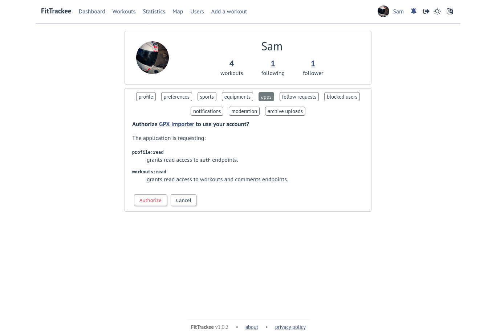

OAuth 2.0¶
Added in version 0.7.0.
FitTrackee provides a REST API (see documentation) whose most endpoints require authentication/authorization.
To allow a third-party application to interact with API endpoints, an OAuth2 client can be created in user settings (‘apps’ tab).
Warning
OAuth2 endpoints requiring authentication are not accessible by third-party applications (documentation), only by FitTrackee client (first-party application).
FitTrackee supports only Authorization Code flow (with PKCE support). It allows to exchange an authorization code for an access token. The client ID and secret must be sent in the POST body. It is recommended to use PKCE to provide a better security.
Scopes¶
The following scopes are available:
application:write: grants write access to application configuration (only for users with administration rights),equipments:read: grants read access to equipments endpoints (new in 0.8.0),equipments:write: grants write access to equipments endpoints (new in 0.8.0),follow:read: grants read access to follow requests and followers endpoints (new in 0.9.0),follow:write: grants write access to requests and followers endpoints (new in 0.9.0),notifications:read: grants read access to notifications endpoints (new in 0.9.0),notifications:write: grants write access to notifications endpoints (new in 0.9.0),profile:read: grants read access to auth endpoints,profile:write: grants write access to auth endpoints,reports:read: grants read access to reports endpoints (new in 0.9.0),reports:write: grants write access to reports endpoints (new in 0.9.0),users:read: grants read access to users endpoints,users:write: grants write access to users endpoints,workouts:read: grants read access to workouts and comments endpoints (changed in 0.9.0),workouts:write: grants write access to workouts and comments endpoints (changed in 0.9.0).
Flow¶
The user creates an App (client) on FitTrackee for a third-party application.
After registration, the client id and secret are shown.They must be stored in the 3rd-party application by the user.- The 3rd-party app needs to redirect to FitTrackee, in order for the user to authorize the 3rd-party app to access user data on FitTrackee.
 The authorization URL ishttps://<FITTRACKEE_HOST>/profile/apps/authorize.The required parameters are:client_id: the client id displayed after registrationresponse_type:code, since FitTrackee only supports Authorization Code flow.scope: scopes separated with space.
and optional parameters:state: unique value to prevent cross-site request forgery
For PKCE, the following parameters are mandatory:code_challenge: string generated from a code verifiercode_challenge_method: method used to create challenge, for instance “S256”
Example for PKCE:https://<FITTRACKEE_HOST>/profile/apps/authorize?response_type=code&client_id=<CLIENT_ID>&scope=profile%3Aread+workouts%3Awrite&state=<STATE>&code_challenge=<CODE_CHALLENGE>&code_challenge_method=S256 - After the authorization, FitTrackee redirects to the 3rd-party app, so the 3rd-party app can get the authorization code from the redirect URL and then fetches an access token with the client id and secret (endpoint /api/oauth/token).Example of a redirect URL:
https://example.com/callback?code=<AUTHORIZATION_CODE>&state=<STATE>
Note
OAuth2 support is implemented with Authlib library.
Warning
X-Forwarded-Proto header must be set.nginx:proxy_set_header X-Forwarded-Proto $scheme;
Resources¶
Some resources about OAuth 2.0:
OAuth 2.0 Simplified by Aaron Parecki (example for authorization code flow with PKCE)
Web App Example of OAuth 2 web application flow with Requests-OAuthlib (python)
OAuth 2 Session with Authlib (python)
Minimal example of an application interacting with FitTrackee (python)